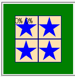

仕様では背景画像の初期位置（background-positionプロパティで設定する）はパディング辺を基準にして決めるとされているが、MacIEはボーダー辺を基準にする。
<div style="background-image:url(../img/img01.png);
background-position:0% 0%; width:96px; height:96px;
border:24px solid green;">0% 0%</div>
background-positionプロパティの指定で背景画像の左上とパディング辺の左上端とを揃えています。
Moz1.0.2での表示（標準モード）
MacIE5.1～5.2で不具合の発生が確認されています。